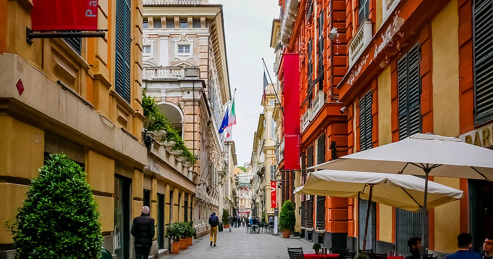

Cosa Vedere a Genova
Genova è una città ricca di storia e cultura, dove ogni angolo racconta una storia unica. Scopri alcune delle attrazioni imperdibili che rendono questa città così affascinante:
- Acquario di Genova: Uno dei più grandi acquari d'Europa, con una vasta gamma di specie marine da ammirare.
- Porto Antico: Un'area vibrante e storica, ideale per passeggiare, cenare e visitare attrazioni come il Bigo e la Biosfera.
- Cattedrale di San Lorenzo: Questa splendida chiesa è un capolavoro dell'architettura gotica e romanica.
- Via Garibaldi: Anche conosciuta come "Le Strade Nuove", ospita magnifici palazzi patrimonio dell'UNESCO. 
- Palazzo Ducale: Un importante centro culturale che ospita mostre d'arte e eventi durante tutto l'anno.